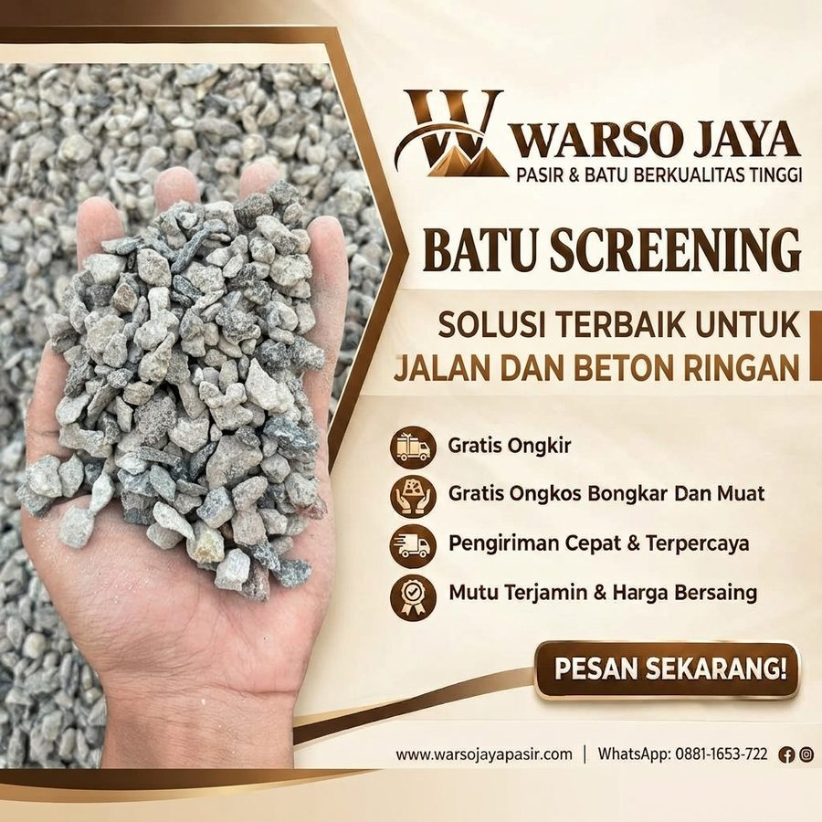

Jual Batu Screening di Jabodetabek
Batu pecah kecil berukuran 5-10 mm, ideal untuk campuran aspal, paving block, dan beton ringan.

Batu Screening
Batu screening berukuran 5-10 mm, ideal untuk campuran aspal, paving block, dan beton ringan.
| Kategori | Batu Split |
|---|---|
| Karakter | Pecahan kecil, 5-10 mm |
| Kegunaan umum | Aspal, paving block, beton ringan |
| Satuan harga | Colt Diesel 6,1 m³ |
| Area kirim | Tangerang, Jakarta, Depok, Bogor, Bekasi |
Harga dapat berubah mengikuti stok dan lokasi pengiriman. Konfirmasi lewat WhatsApp sebelum memesan.
Jual Batu Screening di Jabodetabek
Mencari supplier Batu Screening di Jabodetabek? Warso Jaya Pasir menyediakan Batu Screening untuk kebutuhan rumah tinggal, renovasi, dan proyek di Tangerang, Jakarta, Depok, Bogor, dan Bekasi. Anda dapat melihat harga per kota pada halaman ini, lalu memesan lewat WhatsApp dengan menyebutkan jumlah rit dan lokasi pengiriman.
Apa Itu Batu Screening?
Batu Screening adalah batu pecah berukuran kecil hasil penyaringan yang umumnya dipakai sebagai bahan pengisi dan campuran. Butirannya yang kecil dan bersudut sering dipilih untuk campuran paving block, beton ringan, maupun alas pekerjaan.
Fungsi Utama Batu Screening
Dipakai sebagai agregat kecil pada produk beton.
Umumnya dipakai sebagai lapisan alas dan pengisi.
Dipakai pada beberapa campuran pekerjaan jalan, sesuai spesifikasi proyek.
Keunggulan Membeli Batu Screening di Warso Jaya Pasir
Mudah diratakan dan dikerjakan.
Dapat dipakai untuk beberapa jenis pekerjaan.
Diantar sesuai kebutuhan proyek.
Tips Memakai Batu Screening
- Pastikan ukuran butiran sesuai spesifikasi pekerjaan.
- Simpan di lahan beralas supaya tidak tercampur tanah.
- Tutup bila hujan agar tidak hanyut.
Harga Batu Screening per Kota
| Kota Tujuan | Harga |
|---|---|
| Tangerang | Rp 2.550.000 / rit |
| Jakarta | Rp 2.600.000 / rit |
| Depok | Rp 2.600.000 / rit |
| Bogor | Rp 2.700.000 / rit |
| Bekasi | Rp 2.700.000 / rit |
Harga per rit Colt Diesel 6,1 m³, dapat berubah sewaktu-waktu. Untuk lokasi di luar kota di atas atau jumlah tertentu, tanyakan lewat WhatsApp. Anda juga bisa menghitung kebutuhan lewat kalkulator material.
Layanan Pengiriman Batu Screening ke Seluruh Jabodetabek
Material dikirim langsung ke lokasi proyek Anda. Pilih kota tujuan Anda:
Pengiriman Batu Screening ke Jakarta
Warso Jaya Pasir melayani kebutuhan Batu Screening di wilayah Jakarta untuk rumah tinggal, renovasi, maupun proyek. Wilayah meliputi: Jakarta Pusat, Jakarta Barat, Jakarta Utara, Jakarta Timur, Jakarta Selatan.
Pengiriman Batu Screening ke Tangerang
Warso Jaya Pasir melayani kebutuhan Batu Screening di wilayah Tangerang untuk rumah tinggal, renovasi, maupun proyek. Wilayah meliputi: Kota Tangerang, Kabupaten Tangerang, Kota Tangerang Selatan.
Pengiriman Batu Screening ke Bekasi
Warso Jaya Pasir melayani kebutuhan Batu Screening di wilayah Bekasi untuk rumah tinggal, renovasi, maupun proyek. Wilayah meliputi: Kota Bekasi, Kabupaten Bekasi.
Pengiriman Batu Screening ke Depok
Warso Jaya Pasir melayani kebutuhan Batu Screening di wilayah Depok untuk rumah tinggal, renovasi, maupun proyek. Wilayah meliputi: Kota Depok.
Pengiriman Batu Screening ke Bogor
Warso Jaya Pasir melayani kebutuhan Batu Screening di wilayah Bogor untuk rumah tinggal, renovasi, maupun proyek. Wilayah meliputi: Kota Bogor, Kabupaten Bogor.
Untuk titik pengiriman di luar daftar ini, silakan tanyakan terlebih dahulu agar kami bisa memastikan jangkauan dan estimasi pengirimannya.
Pertanyaan Seputar Batu Screening
Apa kegunaan Batu Screening?
Umumnya untuk campuran paving block, beton ringan, alas, dan pengisi pekerjaan.
Berapa harga Batu Screening?
Harga per kota ada di tabel halaman ini, per rit colt diesel 6,1 m³. Harga dapat berubah mengikuti stok dan lokasi.
Apakah bisa dipesan untuk proyek?
Bisa. Hubungi kami dengan jumlah rit dan lokasi pengiriman.
Pilihan Material Terkait

Butuh Batu Screening untuk Proyek Anda?
Hubungi Warso Jaya Pasir untuk informasi harga, ketersediaan, dan pengiriman ke lokasi Anda.